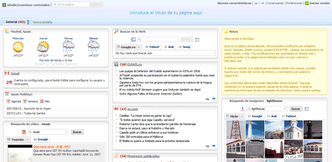

Algunos navegadores no disponen de soporte completo de JavaScript, otros navegadores permiten bloquearlo parcialmente e incluso algunos usuarios bloquean completamente el uso de JavaScript porque creen que así navegan de forma más segura.
En estos casos, es habitual que si la página web requiere JavaScript para su correcto funcionamiento, se incluya un mensaje de aviso al usuario indicándole que debería activar JavaScript para disfrutar completamente de la página. El siguiente ejemplo muestra una página web basada en JavaScript cuando se accede con JavaScript activado y cuando se accede con JavaScript completamente desactivado.
Figura 1.1. Imagen de www.netvibes.com con JavaScript activado
Figura 1.2 Imagen de www.netvibes.com con JavaScript desactivado
El lenguaje HTML define la etiqueta <noscript> para mostrar un mensaje al usuario cuando su navegador no puede ejecutar JavaScript. El siguiente código muestra un ejemplo del uso de la etiqueta <noscript>:
<head> ... </head> <body> <noscript> <p>Bienvenido a Mi Sitio</p> <p>La página que estás viendo requiere para su funcionamiento el uso de JavaScript. Si lo has deshabilitado intencionadamente, por favor vuelve a activarlo.</p> </noscript> <body>
La etiqueta <noscript> se debe incluir en el interior de la etiqueta <body> (normalmente se incluye al principio de <body>). El mensaje que muestra <noscript> puede incluir cualquier elemento o etiqueta HTML.